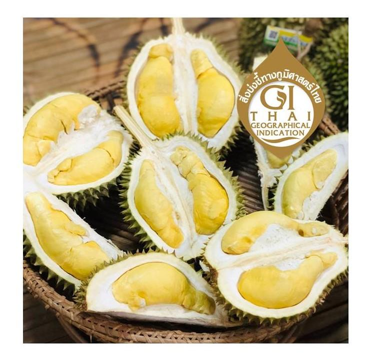

ผลไม้

ลางสาด จากคำบอกเล่าของบรรพบุรุษลับแลว่าลางสาด เป็นผลไม้ตามธรรมชาติมาจากต่างถิ่น แถบแหลมมลายู ภาคใต้ของไทย มีนายพรานเข้าป่าล่าสัตว์ พบนก หนู ค้างคาวและสัตว์ป่าต่างๆเก็บผลกิน นายพรานจึงทดลองกินบ้าง ติดใจในรสชาติและเห็นว่าไม่เป็นอันตรายจึงเก็บผลและเมล็ด มาปลูกในบ้าน ต่อมาได้แพร่ขยายพันธุ์ในหมู่เพื่อนฝูง ญาติพี่น้องทั่วไป
ตำนาน“ลางสาดลับแล”เมื่อกว่า 200 ปี “หลวงพิบูล”เจ้าเมืองลับแลสมัยนั้น เป็นคนที่เกิดที่บ้านนาโป่ง ตำบลฝายหลวง สมัยไปติดต่อราชการบางกอกเมืองหลวง ล่องเรือตามน้ำไป ตอนเข้าประชุมข้อราชการ มีเจ้าเมืองจากทางใต้ เอาลางสาดมาแจกใช้ชิม เป็นการผูกไมตรี และแนะนำผลผลิตเกษตร หลวงพิบูลเจ้าเมืองลับแล เป็นคนหนึ่งจากแดนเหนือ ที่ได้ชิมลางสาดแล้วติดใจ ด้วยท่านเป็นคนที่สนใจไม้ผล พืชผลต่างๆ จึงได้นำเอาเมล็ดลางสาด กลับมาเพาะปลูกที่ลับแลตอนเหนือ ตั้งแต่บ้านเกิดท่าน บ้านนาโป่ง ตำบลฝายหลวง ขึ้นไปจนสุดเขาน้ำตกแม่พูล ออกถึงตำบลนานกกก ข้ามเขาพลึง แพร่ขยายไปทั่ว จากบ้านเจ้าเมืองสู่บ้านเจ้าขุนมูลนาย ถึงชาวบ้าน มีที่ว่างตรงไหนก็ปลูกกันทั่วไป เลือกปลูกตามชอบใจ สภาพภูมิอากาศมันให้เหมาะที่ปลูกแล้วได้ผลดี จนถึงสมัย“หลวงเทพ”บุตรหลวงพิบูล ขึ้นเป็นเจ้าเมืองลับแล ยิ่งเร่งขยายพันธุ์ลางสาดปลูกต่อ โดยขุดถอนจากต้นที่ขึ้นใหม่ตามโคนต้นลางสาดที่ร่วงหล่น หรือเอาเมล็ดไปเพาะบ้าง ปลูกขยายกันทั่วไป
ยุคสมัยรัชกาลที่ 5 เมืองลับแล ได้มีนายอำเภอเป็นผู้ปกครองเมืองแทนเจ้าเมือง คือ “พระศรีพนมมาศ”เป็นนายอำเภอคนแรก ซึ่งนายอำเภอท่านนี้ มีบ้านอยู่ที่บ้านยางกะได คือเขตเทศบาลตำบลศรีพนมมาศ ในขณะนี้ ท่านได้ให้ความสำคัญกับการพัฒนาอาชีพทำสวนผลไม้เป็นอย่างมาก มีการเกณฑ์ชาวบ้านให้ปลูกผลไม้นานาชนิด โดยเฉพาะลางสาด มีการพัฒนาระบบน้ำ เป็นฝายกั้นน้ำลำห้วย “ฝายหลวง” คือผลงานที่เป็นที่ประจักษ์ การสร้างฝายหลวง ต้องเกณฑ์แรงงานประชาชนมาทำงานจำนวนมาก และเป็นงานที่ยากลำบาก เพื่อให้ชาวบ้านมีน้ำทำการปลูกพืชผลต่างๆ ขณะเดียวกัน มีการตั้งกฎระเบียบว่า ใครที่ไม่ปลูกต้นหมากรากไม้ คอยแต่เก็บหาของกินจากป่า จับได้ต้องถูกเกณฑ์มาใช้แรงงานทำฝายหลวง ชาวบ้านนอกจากใจรักที่จะปลูกต้นไม้ต่างๆแล้ว และโดนบังคับด้วย จึงต้องปลูกต้นไม้ ที่ไหนว่าง จับจองที่ป่า มีตัดโค่นต้นไม้ ต้องปลูกลางสาดแทนที่
ถิ่นกำเนิดเดิมของลางสาด เป็นไม้ป่าพื้นเมืองในเขตร้อน แถบหมู่เกาะมลายู อินโดนีเซีย ชวา ฟิลิปปินส์ และประเทศไทยเรานี่แหละ ในประเทศไทยพบว่ามีที่บ้านสิโป ตำบลกาลิซา อำเภอระแงะ จังหวัดนราธิวาส และขยายปลูกออกไป หรือแพร่ขยายกระจายออกไปด้วยวิธีต่างๆ อาจจะเป็นการนำพาโดยสัตว์หรือมนุษย์ แพร่ไปทั่ว แต่ต่อมาหลังๆ การคมนาคมเส้นทางไปมาสะดวกขึ้น ก็มีการนำเอาไปปลูกกระจายมากขึ้น จากไม้ป่ามาเป็นไม้บ้าน แพร่ไปจังหวัดต่างๆ ทางภาคใต้แถบฝั่งทะเลตะวันออก ชุมพร สุราษฎร์ธานี นครศรีธรรมราช ยะลา ปัตตานี และพื้นที่จังหวัดนราธิวาสถิ่นเดิมต้นกำเนิดเอง จนกระจายไปสู่ภาคอื่นๆ เช่น ตะวันออก จันทบุรี ระยอง ตราด ปราจีนบุรี ขึ้นเหนืออุตรดิตถ์ แพร่ น่าน พะเยา ด้วยเพราะสภาพดินฟ้าอากาศที่เหมาะสมคล้ายคลึงกัน ปริมาณความชื้นพอๆ กัน โดยเฉพาะจังหวัดอุตรดิตถ์ เป็นถิ่นใหญ่สุดในภาคเหนือที่ปลูกลางสาด เป็นที่ขึ้นชื่อว่าเป็นผลไม้ประจำเมืองอุตรดิตถ์ เลยทีเดียว
ลางสาดพันธุ์พื้นเมืองหรือพันธุ์ทิปปิก้า ปลูกกันทั่วไป มีทั้งผลกลมและผลยาวมีจุก ชนิดผลจุกจะมียางน้อย เมล็ดเล็ก เนื้อละเอียด รสชาติดีหอมหวานกว่าผลกลม พันธุ์ขนดก จะเปลือกหนา ยางมาก เมล็ดใหญ่ เนื้อบาง ไม่หวานมากหรือออกเปรี้ยว
การปลูกลางสาด เนื่องจากเป็นไม้ที่ชอบเจริญเติบโตบนพื้นที่ดินร่วนปนทราย มีอินทรียวัตถุมาก เช่น พื้นที่ในป่าเขตร้อนชื้นทั่วไป ที่มีความอุดมสมบูรณ์ตามธรรมชาติ ความชื้นค่อนข้างสูง ที่ได้รับจากร่มไม้ใหญ่น้อยนานาพรรณ ถ้านำมาปลูกในพื้นที่ราบโล่ง ต้องปรับสภาพแวดล้อมให้เหมือนป่าธรรมชาติเดิม คือต้องให้มีร่มเงาให้มากๆ โดยทำสวนกล้วย หรือปลูกไม้โตเร็ว มีทรงพุ่มที่พอพรางแสงได้ เช่น เพกา มะรุม ทองหลาง สะตอ ทำเป็นไม้ร่มเงา รักษาความชื้นให้เป็นสวนเย็นก่อนแล้วค่อยปลูกต้นลางสาดแซมแทรกตามระยะต่างๆ ที่ต้องการ ซึ่งแนะนำให้ปลูกในระยะ 6x6 เมตร พื้นที่ 1 ไร่จะได้ 38-44 ต้น ขุดหลุมกว้างยาวลึก 50 เซนติเมตร ปรุงแต่งดินในหลุมด้วยปุ๋ยคอกปุ๋ยหมัก ต้นพันธุ์ส่วนใหญ่จะใช้การเพาะกล้าจากเมล็ด อายุกล้า 1-2 ปี จะสูงประมาณ 30-50 เซนติเมตร หรือจะปลูกด้วยกิ่งตอน กิ่งทาบ ก็ได้เพียงแต่จะมีปัญหาระบบราก ปลูกแล้วทำหลักปักยึดให้มั่นคง โดยทั่วไปจะปลูกด้วยต้นกล้าที่เพาะเมล็ด เพราะระบบรากดี มีรากแก้วที่แข็งแรง และมีโอกาสที่จะเปลี่ยนยอดเป็น “ลองกอง” พืชในตระกูลเดียวกัน แต่มีความโดดเด่นมากกว่าได้

ทุเรียนหลง-หลินลับแล เป็นพันธุ์เฉพาะถิ่นที่สร้างชื่อเสียงให้กับ ชาวจังหวัดอุตรดิตถ์ ด้วยรสชาติ อันโดดเด่นเป็นเอกลักษณ์เฉพาะตัว เช่นเดียวกับทุเรียนก้านยาวของจ.นนทบุรี ซึ่งหากนำพันธุ์ไปเพาะปลูกที่อื่น จะทำให้ผลผลิตที่ได้มีรสชาติผิดแผกไปจากเดิม หรืออาจไม่ติดผลผลิตก็เป็นได้ ด้วยการเจริญเติบโตและการสะสมอาหารในเนื้อผลนั้น จำต้องใช้สภาพแวดล้อมหรือแม้แต่ธาตุอาหารในดินเฉพาะก่อน อันเป็นถิ่นกำเนิดดั้งเดิม จึงทำให้ผลผลิตของทุเรียนหลิน-หลงลับแลออกสู่ตลาดน้อย และมีราคาค่อนข้างแพงถึง กิโลกรัมละ 400-600 บาท ด้วยมีคุณภาพของผู้ผลิตเป็นเครื่องการันตี ให้ผู้ชื่นชอบทุเรียนชนิดนี้ยอมควักกระเป๋าจ่ายโดยผู้ขายไม่จำเป็นต้องโฆษณาสรรพคุณแต่อย่างใด
ถิ่นกำเนิดทุเรียนพันธุ์หลงลับแลต้นเดินขึ้นอยู่ม่อนน้ำจำ หมู่ 7 บ้านผามูบ ตำบลแม่พูล อำเภอลับแล จังหวัดอุตรดิตถ์ ในสวนซึ่งเดิมเป็นของนายมี หอมต้น เกษตรกรบ้านผามูบ คือเมื่อประมาณปี พ.ศ.2479 นายมี หอมตัน ได้ขึ้นไปทำสวนบนม่อนน้ำจำ โดยการนำกล้าทุเรียนที่ขึ้นเองจากเมล็ดของผลทุเรียนที่ร่วงหล่นภายในสวนของเพื่อนบ้านมาปลูกต่อมาประมาณปี พ.ศ.2485 สวนของนายมี หอมตัน ดังกล่าวได้เปลี่ยนเจ้าของมาเป็น นายสม อุปละ ช่างตีเหล็กฝีมือดีแห่งบ้านนาปอย( หมู่ 1 ตำบลแม่พูล อำเภอลับแล จังหวัด อุตรดิตถ์)และนายสม อุปละ และจากคำบอกเล่าของนายคำ อุปละ บุตรชายคน โตของนายสม-นางหลง อุปละ ระบุว่าสวนของบิดามารดา ซึ่งเดิมเป็นของนายมีหอมตัน มีทุเรียนพื้นเมืองที่นายมี ปลูกไว้และติดสวนมาสิบกว่าต้น ทุเรียนจำนวนนี้มีทุเรียนพันธุ์หลลับแลต้นเดิมรวมอยู่ด้วยหนึ่งต้น จึงเชื่อว่านายมี หอมตันคือ บุคคลที่ปลูกทุเรียนพันธุ์หลงลับแลต้นเดิม นายสม-นางหลง อุปละ พบว่าต้นทุรียนพันธุ์หลงลับแลต้นเดิมมีลักษณะพิเศษแตกต่างจากทุเรียนพื้นเมืองทั่วไป คือทุเรียนมีรสชาติดี เมด็ดลีบ จึงเรียนทุเรียนต้นนี้ว่า"ทุเรียนเมล็ดตาย"( ชาวลับแลเรียกเมล็คลีบว่า เมล็ดตาย)หรือเรียกอีกชื่อว่า"ต้นหัวห้วยในเหลืองสัญญา" เพราะทุเรียนต้นนี้ขึ้นอยู่ริมห้วย และเนื้อสีเหลืองค่อนข้างจัด ส่วนคำว่า สัญญา หมายความว่าเจ้าของต้นรับประกันกับผู้ซื้อว่าผลของทุเรียนต้นนี้ว่ามีรสชาติดี และเมล็ดลีบ ด้วยคุณสมบัติดีเด่นของทุเรียนพันธุ์ หลงลับแลต้นเดิม ทำให้นายสม-นางหลง อุปละ ขายทุเรียนพันธุ์หลงลับแลได้ในราคาที่สูงกว่าทุเรียนพื้นเมืองทั่วไป2-3 เท่า ในปี พ.ศ. 2520 ได้มีการจักประกวดทุเรียนที่ป ลูกจากเมล็ดขึ้นที่อำเภอลับแล จังหวัดอุตรดิตถ์เพื่อหาทุเรียนพันธุ์ใหม่ ที่มีคุณภาพดี การประกวดดังกล่าวพบว่ามรการ ส่งผลทุเรียนพันธุ์หลงลับแลต้นเดิมเข้าประกวดในนาม นางหลง อุปละปรากฏว่าได้รับรางวัลยอดเยี่ยมและได้รับการับรองพัน ธุ์ เมื่อ วันที่ 20 กันยายน พ.ศ. 2521 ณ ห้องประชุมศาลากลางจังหวัดอุตรดิตถ์
ถิ่นกำเนิดทุเรียนพันธุ์หลินลับแล ต้นเดิมปลูกโดยนายหลิน ปันดาล บ้านเลขที่ ๑๒๖ หมู่ ๗ บ้านผามูบ ตำบลแม่พูล อำเภอลับแล จังหวัดอุตรดิตถ์ กล่าวคือในปีพ.ศ.2493 นายหลิน ปันลาด ได้นำเมล็ดทุเรียนมาปลูกแล้วเกิดการกลายพันธุ์มีลักษณะที่แปลกกว่าทุเรียนพันธุ์อื่นๆจึงนำให้เพื่อนบ้านกินกันหลายคนบอกว่ามีรสชาติดี ต่อมาในปีพ.ศ.2520 เจ้าของต้นเดิมได้ส่งทุเรียนพันธุ์นี้เข้าประกวดในการประกดทุเรียนที่ปลูกจากเมล็ด ซึ่งร่วมดำเนินจัดการประกวดระหว่างกรมวิชาการการเกษตร กรมส่งเสริมการเกษตรและจังหวัดอุตรดิตถ์ แม้ว่าในปีดังกล่าวทุเรียนพันธุ์หลงลับแลจะได้รับรางวัลยอดเยี่ยมก็ตามหลินลับแลก็ยังไดรับความนิยมจากนักบริโภคทุเรียนไม่น้อยกว่าทุเรียนพันธุ์หลงลับแล เพื่อเป็นเกียรติแก่นายหลิน ปันลาด ผู้ปลูกทุเรียนต้นเดิมจึงตั้งชื่อทุเรียนพันธุ์นี้ว่า"หลินลับแล"และประกอบกับต้นเดิมขึ้นอยู่ที่บ้านผามูบ จึงมีชื่ออีกชื่อหนึ่งว่า"ผามูบด"หลังจากนายหลิน ปันดาลถึงแก่กรรม ต้นเดิมจึง อยู่ในความดูแลและขยายพันธุ์โดยนายสว่าง ปันดาล บุตรชาย
สับปะรดห้วยมุ่น เป็นพืชล้มลุกชนิดหนึ่งที่มีต้นกำเนิดมาจากบริเวณทวีปอเมริกาใต้ ลำต้นมีขนาดสูงประมาณ 80-100 เซนติเมตร การปลูกสามารถปลูกได้ง่ายโดยการฝังกลบหน่อหรือส่วนยอดของผลที่เรียกว่า จุก เปลือกของผลสับปะรดภายนอกมีลักษณะคล้ายตาล้อมรอบผล
การขยายพันธุ์ ใช้ส่วนของลำต้นในการขยายพันธุ์ เช่น หน่อ จุกหรือตะเกียง พันธุ์สับปะรดที่ปลูกไว้รับประทานผลจะเป็นพันธุ์ที่ไม่มีเมล็ดและอาจเกิดการกลายพันธุ์จนทำให้ลำต้นสูง ผลเล็ก มีหนามมาก หรือคล้ายกับพันธุ์สับปะรดป่าได้ เนื่องจากมีการขยายพันธุ์กันมานาน
ถิ่นกำเนิด คือ สับปะรดพันธ์ปัตตาเวียที่ถูกนำเข้าไปปลูกในตำบลห้วยมุ่นประมาณ 50 ปีมาทแล้ว(บ้างก็ว่า 100 ปีแล้ว จนกลายเป็นพันธุ์ท้องถิ่น